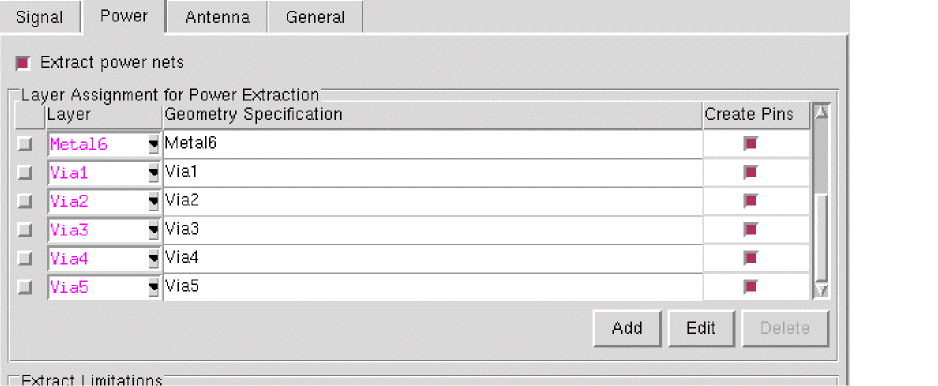

Customized Appearance of the Standalone Abstract Generator Interface
You can specify the color scheme for Abstract Generator UI items and controls, such as tables and buttons, in the .Xdefaults file.
The following defaults are used by Abstract Generator:
This table describe options to specify the color scheme for the following:
|
UI Option
|
Types of Options
|
|
Buttons
|
Use the following options for customizing the colors of buttons and tabs:
In the figure below, the text (foreground) on the two active buttons and the four tabs is set to red and the button and tab background is set to blue.
|
|
Tables
|
Use the following options for setting the color scheme for tables:
The figure below illustrates the black background and red foreground table setting. The applied color effect is showing only for the selected rows.
Another example of the same table color setting is provided in the figure below, which captures the Open Library form.
|
|
|
The Geometry Specification column in the Layer Assignment tables is also considered to comprise of rows of a table. The text at the current position of the cursor assumes the applied table foreground color. An example is shown in the figure below in which the table foreground color is set to red and the cursor is in the last row in the Geometry Specification column.
|
|
Text Entries
|
This option applies the color setting to non-numeric text entries and fields expecting non-numeric user text inputs.
*Abstract*Text.foreground: <color>
In the figure below, the text color has been set to blue.
|
|
Entry Boxes
|
This option applies the color setting to drop-down lists (such as the drop-down lists in the Layer column in the Layer Assignment tables) and combo boxes, fields with numeric values, and fields expecting numeric inputs.
*Abstract*Entry.foreground: <color>
The following figure shows the effect of setting the entry box color to magenta. The setting for text entry (blue) has been retained from the previous example to illustrate the comparison between text entries and entry boxes.
The figure below shows the effect of the same entry box color setting (magenta) on drop-down lists.

|
|
Labels
|
Use the following options for setting the color of the foreground and background of labels:
In the figure below, the label foreground is set to magenta and background to yellow.
|
|
GUI
|
Use the following options for setting the color of the foreground and background of the GUI:
In the figure below, the GUI foreground is set to red and the background to black.
|
After you have added the font or the color scheme specification to your .Xdefaults file, merge the changes into the X resource database (XRDB) using one of the following commands:
Queries to the XRDB return only the values present when the .Xdefaults file was last read. However, the .Xdefaults file is usually read at login on most UNIX systems.
Related Topics
Customization of the Abstract Generation Flow
Return to top